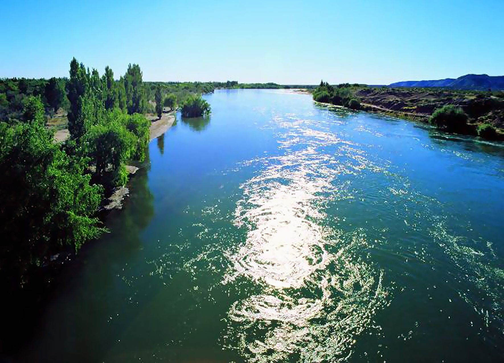

IDA
VIE 9 OCT
19:55
AEP
2 H
✈
21:55
NQN
GENERAL ROCA · RÍO NEGRO
09—12 OCT 202609—12
Emilio ya se está preparando…
0%GENERAL ROCA · RÍO NEGRO
09—12
FALTAN
PREVIACada vez falta menos.
PREPARACIÓN
Marcá lo que ya tenés listo.
DOCUMENTACIÓN
ROPA
TECNOLOGÍA
PERSONAL
PROGRESO AL VIAJE
La cuenta regresiva arrancó.
LA BANDA
EN DESTINO
General Roca · Río Negro
PRÓXIMO MOMENTO
VIE 9 OCT · 19:55
Llegada 21:55 · duración 2 hVUELOS
HOJA DE RUTA
EL FINDE EN ROCA
IMPERDIBLES
Río Negro, bardas, senderos y paisaje patagónico. Uno de los lugares para salir de la ciudad y ver la otra cara de Roca.
≈ 12 KM DE LA CIUDAD · ABRIR MAPA ↗Formaciones, senderos y paisaje de bardas dentro del área de Paso Córdoba.
Mirador sobre el paisaje del Alto Valle, las bardas y el entorno del Río Negro.
Canales, manzanas, peras y el paisaje productivo característico de la región.
COMER & TOMAR
ABASTECIMIENTO
Desayuno, comida, agua, gaseosas, snacks y provisiones para el finde.
Una referencia céntrica para tener guardada ante cualquier necesidad.
Mapa directo para resolver abastecimiento de bebidas cerca de donde estén.
Búsqueda directa en Maps para encontrar la opción disponible más conveniente.
CUANDO BAJA EL SOL
Muy cerca del hotel. Buena opción para arrancar sin demasiada logística.
≈ 0.3 KM DEL HOTELAbrir Maps y elegir según cercanía, horario y movimiento de esa noche.
VER OPCIONES ABIERTAS ↗Para cuando el plan deja de ser solamente tomar algo.
REVISAR EVENTOS Y HORARIOS DEL DÍA ↗LA NOCTURNIDAD CAMBIA SEGÚN EL DÍA · REVISAR MAPS ANTES DE SALIR
CERCA DEL HOTEL
Distancias aproximadas en línea recta desde Bardas del Sur. El recorrido real puede variar.
DIRECCIONES ÚTILES
UN POCO DE ROCA
General Roca está en el Alto Valle de Río Negro. En 1879 se estableció el Fuerte General Roca en el área conocida como Fisque Menuco, territorio previamente habitado por comunidades mapuche.
El desarrollo posterior del riego transformó profundamente el paisaje: chacras, canales, peras y manzanas conviven con las bardas y el ambiente árido de la Patagonia.
Para entender Roca: centro → chacras → bardas → Paso Córdoba.

DESTINO
GENERAL